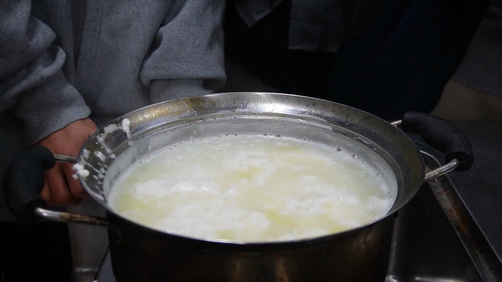

今ホエイが話題に！？
「ホエイ」という言葉を聞いたことはありますか？今、SNSや健康業界でホエイが注目を浴びはじめています。
その理由をこれから深掘りしていきます！
ホエイとは

ホエイは、牛乳からチーズやヨーグルトを作る際にできる、半透明の液体です。
牛乳の主成分であるカゼインや脂肪分が固まった後に残る水溶性の成分がホエイです。
ヨーグルトの上澄みの液体、あれもホエイ！
今までは副産物として産業廃棄物になってしまっていたことも。
しかし、ホエイの栄養価の高さから、様々な方向で活用しようという取り組みが広まっています！
ホエイには牛乳とほぼ同等の乳糖、ミネラル、ビタミンが含まれています！また水溶性のタンパク質も豊富です。
身近なものだと、ホエイプロテインなどに活用されています！
このサイトでは、ホエイの様々な活用方法を紹介していますので、ぜひ確認して下さい！
ホエイを使ったメニュー！？


私達について
私達は、ホエイの持続可能な活用方法を模索する、名古屋大学の学生です。
2025年2月にはイベントを開催。
ホエイを使った石鹸作りも行いました。
試験的に、ホエイを使ったチーズトレイの作成にも挑戦しました。
これらの活動を通して、ホエイを有効活用してもらう、